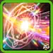
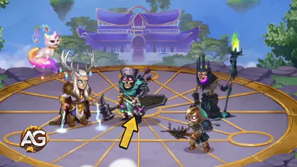

Atributo Principal: Penetração Mágica (47.911 no nÁvel máximo)
Com um poder máximo de 181.943, Merlin se destaca como um dos mascotes de nÁvel mais alto do jogo. Seu impressionante Poder de Habilidade (12.360) e Poder de Padrinho (11.064) o tornam especialmente valioso para equipes baseadas em magia.
Prós e Contras do Mascote Merlin - Hero Wars: Web e Facebook
✅ Prós
Grande Impulso Mágico: Com 47.911 de Penetração Mágica e 12.360 de Poder de Habilidade no nÁvel máximo, Merlin destrói as defesas inimigas
Controle de Área: Sua habilidade Magnus Magica! cria uma zona de dano persistente que continua prejudicando os inimigos mesmo após o lançamento
Sinergia com Equipes Mágicas: A habilidade Phobia de Magica! reduz a defesa mágica inimiga, amplificando o dano de todos os aliados mágicos
Bônus de Velocidade:Tempus Magica! aumenta significativamente a velocidade de ativação de habilidades dos heróis mágicos apadrinhados
Padrinho Versátil: Funciona com 18 heróis mágicos diferentes, incluindo opções de elite como Orion, Satori e Lars/Krista
Segurança na Retaguarda: Como mascote de suporte, Merlin permanece protegido atrás do tanque enquanto causa dano
⌠Contras
Apenas para Magia: Inútil com causadores de dano fÁsico, limitando as opções de composição da equipe
Dependente de Posição:Magnus Magica! atinge apenas inimigos da linha de frente, não alcançando ameaças na retaguarda
Alto Investimento: Requer recursos significativos para alcançar seus poderosos atributos máximos (181.943 de poder)
SensÁvel ao Tempo: A zona de distorção dura apenas 5 segundos – os inimigos podem sair dela
Contra-atacável: Equipes com defesa mágica ou heróis como Cornelius podem neutralizar sua eficácia
Limitação de Padrinho: Apesar de versátil, só beneficia heróis mágicos especÁficos (não todos os usuários de magia)
Habilidades do Mascote Merlin Explicadas - Hero Wars: Dominion Era
Aprenda como as habilidades mágicas de Merlin funcionam em batalha e como usá-las de forma eficaz para derrotar seus inimigos.
Habilidades Ativas do Mascote Merlin

Magnus Magica!
O ataque principal de Merlin cria um cÁrculo mágico roxo no chão que dura 5 segundos. Inimigos que permanecerem nesse cÁrculo recebem dano contÁnuo adicional.
Habilidade Magnus Magica, Hero Wars Dominion Era.
Dicas: Esta habilidade funciona melhor contra grupos de inimigos. Para obter o máximo efeito, combine Merlin com heróis que ataquem inimigos na linha de frente (como Aurora ou Orion) para manter mais alvos dentro da zona de dano.
Phobia de Magica!
Merlin enfraquece a defesa mágica do inimigo mais próximo, fazendo com que ele receba mais dano de todos os ataques mágicos (não apenas os de Merlin).

Habilidade Phobia de Magica, Hero Wars Dominion Era.
Dicas: É especialmente poderosa quando combinada com outros heróis mágicos. O inimigo na linha de frente (geralmente o tanque) será frequentemente o alvo, tornando todos os ataques mágicos da sua equipe mais fortes contra ele.
Habilidade de Patronagem do Mascote Merlin
Tempus Magica!
Quando atribuÁdo a um herói, Merlin faz com que as habilidades mágicas dele sejam ativadas mais rapidamente. Isso significa que o herói pode atacar com mais frequência durante a batalha.
Dicas: Melhor usado com heróis que têm ataques mágicos poderosos, mas lentos. O aumento de velocidade pode ajudá-los a lançar seus ataques mais fortes antes que o inimigo possa reagir.
Lista de Patronagem de Merlin - Hero Wars: Dominion Era
Merlin fortalece heróis mágicos com aumento na velocidade das habilidades e nos atributos mágicos. Abaixo está a lista completa de heróis que se beneficiam da patronagem de Merlin nas batalhas.
Você gostou do nosso Guia do Pet Merlin para Hero Wars Web e Facebook? Há algo que não entendeu ou gostaria de sugerir mudanças? Convidamos você a se juntar à nossa sessão de comentários na página do Alexandre Games Blog. Não hesite em expressar sua opinião, clarificar suas dúvidas e compartilhar sua sugestões. Clique no botão abaixo para começar:


 Guia do Mascote Axel para Hero Wars: Dominion Era
Guia do Mascote Axel para Hero Wars: Dominion Era
 Guia do Mascote Biscuit para Hero Wars: Dominion Era
Guia do Mascote Biscuit para Hero Wars: Dominion Era
 Guia do Mascote Cain para Hero Wars: Dominion Era
Guia do Mascote Cain para Hero Wars: Dominion Era
 Guia do Mascote Fenris para Hero Wars: Dominion Era
Guia do Mascote Fenris para Hero Wars: Dominion Era Guia do Mascote Khorus – Hero Wars: Dominion Era | Atributos, Função e Como Usar
Guia do Mascote Khorus – Hero Wars: Dominion Era | Atributos, Função e Como Usar
 Guia do Mascote Oliver para Hero Wars: Dominion Era
Guia do Mascote Oliver para Hero Wars: Dominion Era